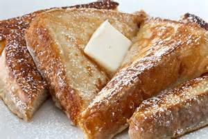
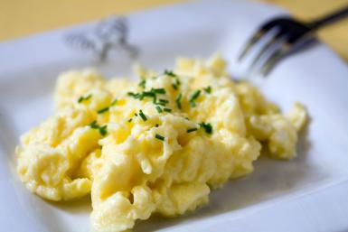
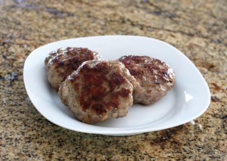

Breakfast Recipes
French Toast

List of Ingredients
- 1 teaspoon ground cinnamon
- 1/4 teaspoon ground nutmeg
- 2 tablespoons sugar
- 4 tablespoons butter
- 4 eggs
- 1/4 cup milk
- 1/2 teaspoon vanilla extract
- 8 slices challah, brioche, or texas bread
- 1 cup maple syrup, warmed
Steps - How to Make French Toast
- Combine, cinnamon, nutmeg, and sugar
- Melt butter in pan
- Whisk together cinnamon mixture, eggs, milk, and vanilla
- Pour into shallow container
- Dip bread in egg mixture
- Fry slices until golden brown on both sides
- Serve with warm syrup
Scramble Eggs

List of Ingredients
- 8 eggs
- 1/2 cup whole milk
- 2 tbsp butter
- salt/pepper
Steps - How to Make Scramble Eggs
- Crack eggs into a mixing bowl, beat until they turn pale yellow
- Melt butter in pan over medium heat
- Add milk to eggs and season with salt and pepper
- Beat eggs and milk vigorously until light and fluffy
- Pour eggs into pan, don't stir for at least a minute
- Push an edge of the egg mixture into the center of pan, tilt pan to allow liquid egg to flow underneath
- Turn of heat and continue gently stirring eggs until uncooked parts are firm
Breakfast Sausage

List of Ingredients
- 1 lb ground pork
- 1 teaspoon salt
- 1⁄2 teaspoon ground black pepper
- 1 1⁄2 teaspoons sage
- 1 3⁄4 teaspoons thyme leaves
- 1 teaspoon fennel
- 1⁄4 teaspoon dried mustard
- 1⁄8 teaspoon clove
- 1⁄4 teaspoon crushed red pepper flakes
- 1⁄8 teaspoon cayenne
Steps - How to Make Breakfast Sausage
- Put all the spices in a small bowl and mix them up with your hands
- Make patties, not to tight
- Place in medium heated pan and fry until done